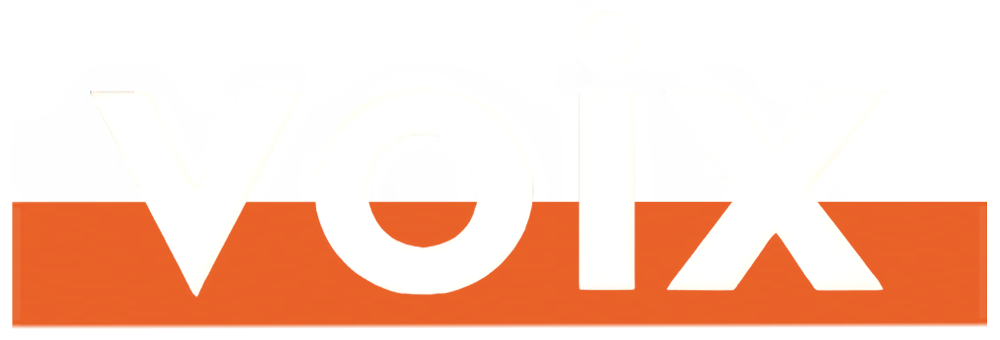
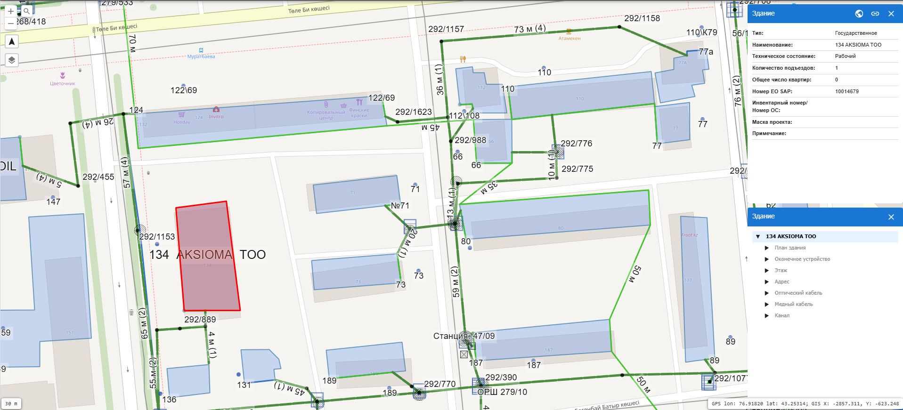
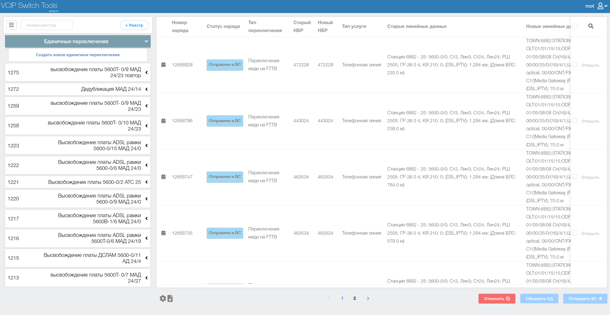
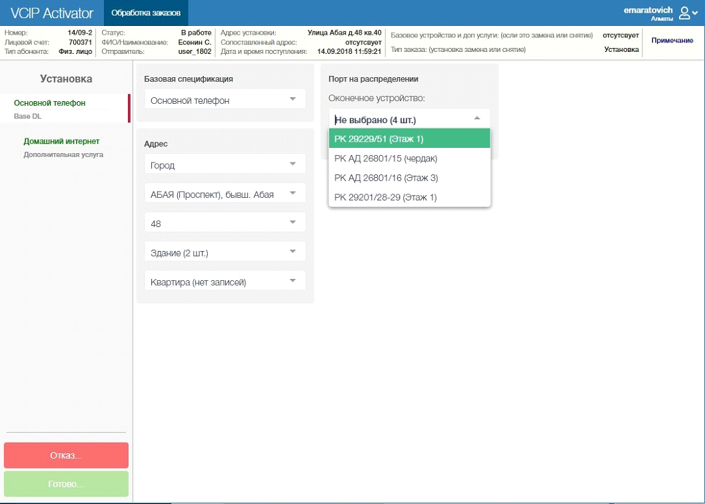
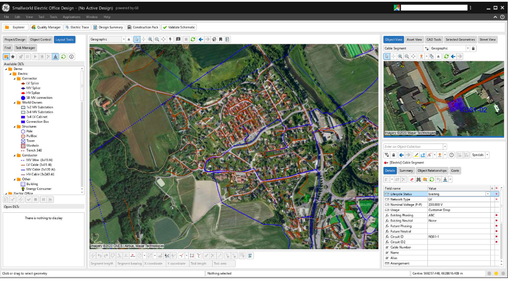
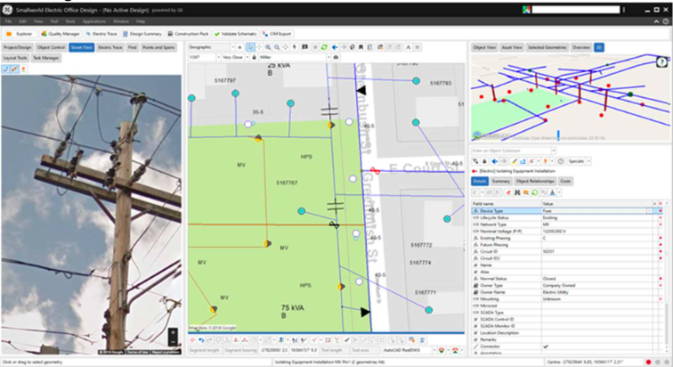

01
Web‑приложения
Разработка приложений любого уровня сложности для среднего и крупного бизнеса: аналитика, проектирование, разработка, внедрение, тестирование, сопровождение и поддержка.

Voix LLC · Almaty · since 2013
Проектируем и внедряем интеграционные решения, которые связывают сетевую инфраструктуру, внутренние процессы и сервисные операции телеком‑компаний в одном рабочем контуре.
Что делаем
Полный цикл разработки для средних и крупных компаний: от бизнес‑анализа до поддержки и сопровождения.
Пространственный учёт сетевых объектов, инженерной инфраструктуры и кадастровых данных на картографической основе.
Модули для движения нарядов, интеграции web‑сервисов и автоматизации бизнес‑ и технологических процессов.
О компании
За это время у Voix накопилась широкая экспертиза в проектировании и внедрении корпоративного ПО, мобильных решений и интеграционных задач для автоматизации бизнес‑ и технологических процессов.
Мы берёмся как за точечные интерфейсы и прикладные модули, так и за большие производственные системы, где важны стабильность, масштабируемость и понятная эксплуатация.
Направления
01
Разработка приложений любого уровня сложности для среднего и крупного бизнеса: аналитика, проектирование, разработка, внедрение, тестирование, сопровождение и поддержка.
02
Географическая и пространственная модель объектов сетей связи, инженерной инфраструктуры и кадастровой информации в одном рабочем контуре.
03
Модули интеграции бизнес‑процессов, движения нарядов и информационных web‑сервисов для единой операционной среды.
Процесс
Voix ведёт проекты сквозным циклом: от бизнес‑анализа и проектирования до разработки, внедрения и поддержки в рабочей эксплуатации.
Команда проектирует решения не вокруг модного стека, а вокруг задачи: процессов заказчика, ограничений инфраструктуры и эксплуатационной устойчивости продукта.
Стек
Проекты

01
Продвинутая геоинформационная система с web‑интерфейсом для создания единой централизованной базы активов предприятия.
Гибкое и масштабируемое решение, которое подходит как крупному и среднему бизнесу, так и небольшим предприятиям.
02
Модуль для единичных и массовых переключений на оборудовании оптической сети доступа с единым интерфейсом для медных и оптических сценариев.
Пользователь получает полный набор функций для создания и обработки заказов на переключение в одном рабочем окне.


03
Система обработки заказов и резервирования ресурсов для телеком‑услуг: ШПД, телефонии, IPTV и других сервисов.
Автоматизирует workflow, резервирует ресурсы в медных, оптических и беспроводных сетях и помогает проверять техническую возможность подключения ещё до выезда.
GE Solutions
Полное GIS‑представление сети даёт возможность видеть точное расположение активов, их характеристики и взаимосвязи, а значит эффективнее и дешевле предоставлять услуги с меньшими рисками.
Решение подходит для работы с масштабными телеком‑данными и поддерживает сценарии от средних операторов до крупнейших инфраструктурных компаний.


Контакты
Свяжитесь с командой напрямую, чтобы обсудить архитектуру, интеграции и формат запуска проекта.
Республика Казахстан, г. Алматы, ул. Сатпаева 133/7, офис 127